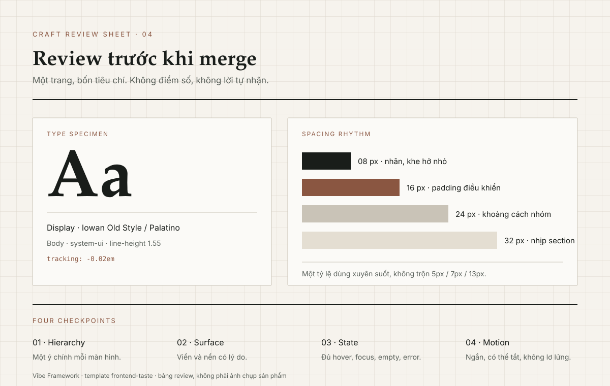

Đặt tiêu chí trước pixel
Một màn hình chỉ cần một câu trả lời rõ ràng.
surface / ink / rule, một accent duy nhất
Ba dials đổi bố cục, nhịp và mật độ theo ca dùng.
Dials khởi tạo: variance 7, motion 6, density 4. Giá trị chỉ ảnh hưởng vùng preview.

Kéo thanh trượt để xem preview phản hồi. Giá trị cao không tự động tốt hơn.
Độ lệch của ô chính so với các ô phụ. Cao hơn tạo nhịp bất đối xứng rõ hơn.
Thời lượng chuyển màu viền và nền. Ở mức thấp, chuyển động gần như biến mất.
Khoảng cách và padding của preview. Cao hơn phù hợp bảng dữ liệu, thấp hơn phù hợp trang đọc.
Một màn hình chỉ cần một câu trả lời rõ ràng.
surface / ink / rule, một accent duy nhất
Đổi viền, giữ kích thước.
Outline nhìn thấy được.
Minh họa bằng CSS, không phải ảnh chụp giao diện thật.
Mỗi ghi chú là một lỗi phổ biến và cách sửa cụ thể.
Khi mọi tiêu đề đều to như nhau, người đọc không biết bắt đầu từ đâu. Chọn một câu dẫn dắt, rồi dùng kích cỡ, khoảng trắng và vị trí để bảo vệ nó.
Dùng viền để phân vùng, không dùng bóng mờ để tạo cảm giác “cao cấp”.
Normal, hover, focus và error. Thiếu một là giao diện chưa sẵn sàng bàn giao.
“100/100 Lighthouse”, “5 sao” hay “đạt giải thưởng” cần bản đo hoặc liên kết nguồn. Nếu không có bằng chứng, hãy mô tả tiêu chí để người đọc tự kiểm.
Mỗi dòng gồm tiêu chí, dấu hiệu lỗi và hành động sửa.
| Tiêu chí | Dấu hiệu lỗi | Cách sửa |
|---|---|---|
| Hierarchy | Ba tiêu đề cùng cỡ, CTA cạnh tranh nhau. | Chọn một ý chính; chuyển các ý còn lại thành nhãn hoặc đoạn phụ. |
| Surface | Gradient tím, bóng mờ dày, bo góc lớn trên mọi thẻ. | Dùng nền phẳng, một accent, viền mỏng và bán kính thống nhất. |
| State | Chỉ có trạng thái thành công; focus mờ hoặc không có. | Bổ sung hover, focus, empty và error trước khi thêm hiệu ứng. |
| Motion | Động width/height/top/left, hiệu ứng chạy mãi không có mục đích. | Chỉ chuyển color/opacity/transform; tôn trọng reduced-motion. |